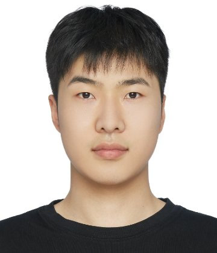
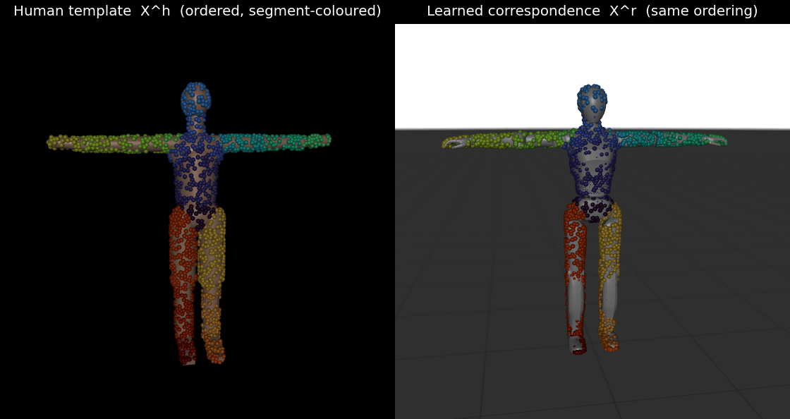
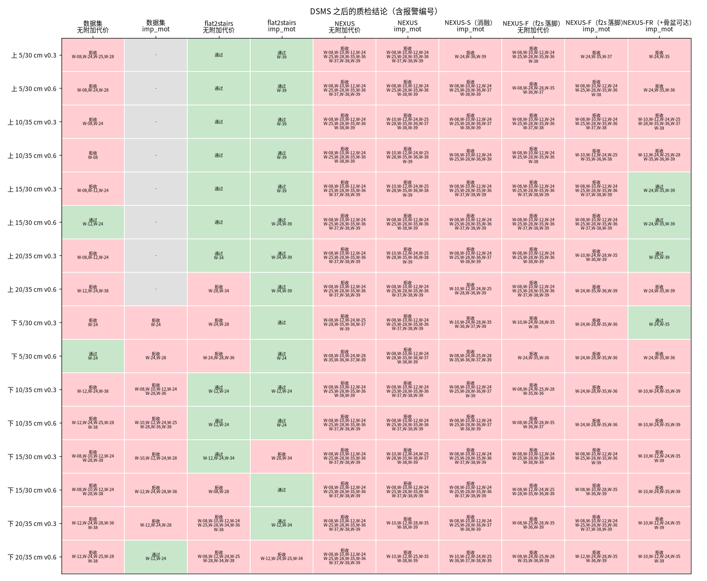
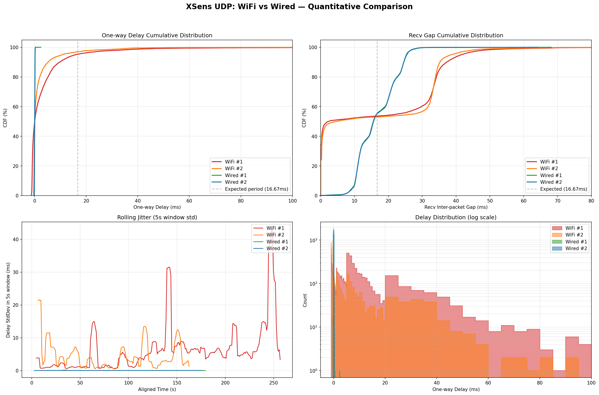

马浩林
人形机器人运动控制算法工程师
现任LimX Dynamics 逐际动力 · 2025 年 7 月至今
方向动作重定向 · 具身数据 · 全身遥操作

人形机器人运动控制算法工程师 · LimX Dynamics 逐际动力
所有工作围绕一件事：把人类动作变成机器人可执行的动作数据。动作重定向是核心，遥操作与训练数据是它的两个出口，动作模仿用来验证数据质量。
惯性 / 光学动捕、VR、视频与开源数据集，统一为标准人体动作表示
检验动作数据能否被策略学会并在真机执行
把人类动作转换为机器人可执行的动作数据，是遥操作、全身控制、强化学习动作模仿与动画内容的共同基础。三条技术路线逐层补齐上一层的不足。
从研究代码到多业务共用的产品级算法
架构重构：模块化解耦，核心代码规模缩减约 60%，以小测试集逐模块回归保证结果一致。
实时化：Python → C++，单帧耗时 8 ms → 0.6 ms，常驻节点直接嵌入遥操作闭环。
通用性：统一的多机型、多数据源适配框架：10 余款人形 / 双足机型，10 余种动捕、视频与开源数据源。
约束感知：真实外形自碰撞规避、脚 / 膝 / 手多接触接地、脚滑抑制；跨版本质量基准（4 机型 × 80 动作）让算法回归可量化。
复现 Unified Motion Retargeting（arXiv 2609.02134）
方法：在人体与机器人表面各采样数百个点，学习人机表面点云对应；逐帧让配对点重合求解关节角，再做脚地对齐。
我的角色：项目负责人，带领实习生完成复现与落地；负责 19 种动作数据源统一转换、SMPL-X 反解与批量生产接入。
效果：新机型接入无需人工配置映射，解剖学一致性 96.4%；批量吞吐约 245 帧 / 秒，接口与优化式引擎兼容。

复现 Generate, Track, Improve（arXiv 2609.31577）动作库管线
地形重建：仅凭一段上 / 下楼动作，从支撑脚反推楼梯几何（台阶高、净深、边缘、级数），毫米级精度，开源动捕 66/68 条正确。
落脚规划：平地步态按接触切分，每步一级、整脚落在踏面内重新规划；台阶高 0.05–0.25 m、净深 0.30–0.40 m 可任意指定。
动力学优化：基于可微 MuJoCo 多重射击的接触隐式轨迹优化，引入冲击惩罚与并联电机限位；楼梯动作物理可行率由 12.5% 提升至 87.5%。
质检：36 项自动质检（穿地、硬着陆、局部支撑、滑移、电机限位等）与 100+ 项回归测试。

对照 2026 年 6 个公开重定向方案
优势：在“人体楼梯动作 → 小型人形机器人”问题上，同时覆盖地形重建、踏面解耦与动力学验证。
短板与方向：尚未接入强化学习跟踪与实机闭环；下一步引入原尺度 SDF 交互约束、优先级 IK 与采样式动力学修正。
| 能力 | robot_retargeter | HOI-Retarget | OTRetarget | PriMoRetarget | DynaRetarget | VICAR | 本链路 |
|---|---|---|---|---|---|---|---|
| 从动作重建楼梯几何 | ○ | ○ | ○ | ○ | ○ | ◐ | ● |
| 楼梯尺寸与人体解耦 | ○ | ◐ | ◐ | ○ | ○ | ○ | ● |
| 按踏面规划落脚、整脚支撑 | ○ | ○ | ◐ | ◐ | ○ | ◐ | ● |
| 动力学可行性 | ○ | ○ | ○ | ○ | ● | ○ | ● |
| 自碰撞 | ○ | ? | ● | ? | ◐ | ? | ◐ |
| 支持 LimX 机型 | ◐ | ○ | ○ | ○ | ○ | ○ | ● |
| RL / 实机证据 | ○ | ◐ | ● | ● | ● | ● | ○ |
● 直接具备 ◐ 部分具备 ○ 不具备 ? 公开材料未说明。各方案评测数据与机器人不同，只比较能力覆盖。
遥操作是具身智能数据采集的主要入口。这部分的重点是负责人角色：把多机型、多设备、多团队的系统组织起来，并稳定交付。
算法侧负责人
架构重构：输出控制器 / 规划器设计文档与重构边界方案，完成多个代码仓库整合，基础库（轨迹、规划、运动学）统一接口。
分工与协作：拆分算法侧任务并带教新人；与 App、软件、硬件、预研、测试、项目团队对接接口与需求。
规范与交付：统一数据采集接口规范与真机测试清单，交付多条产品线的多个版本，支撑 VLA 数据采集与对外项目。
问题攻关：接入 10 余种动捕 / VR / 数据手套设备与多款灵巧手；以数据定量定位网络抖动、缓冲积压等延迟问题。

动作模仿检验重定向数据能否被策略学会并在真机执行，是整条数据链路的最终验证。
基于 BeyondMimic
全流程工具化：跑通训练、回放、策略导出（PT → ONNX）与控制器部署，并解耦为独立工具。
真机与开源：实现人形机器人舞蹈动作真机演示；完成开源代码审查与发布，并输出全流程文档。